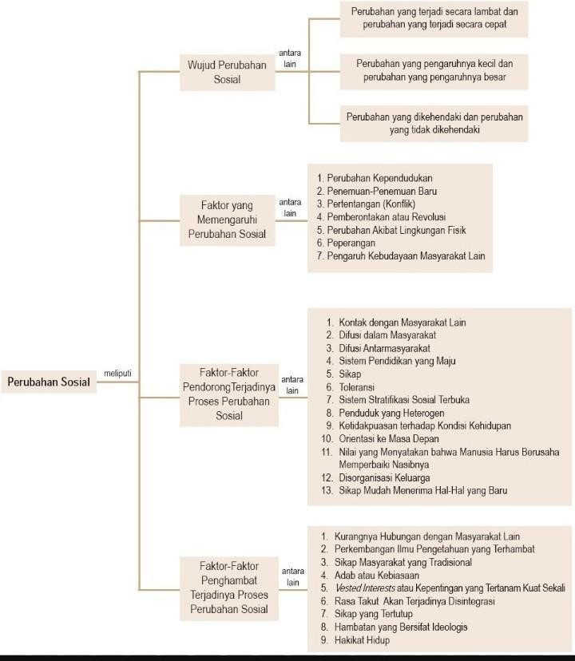
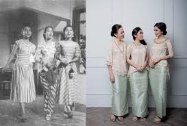

Materi Pembelajaran Sosiologi
Perubahan Sosial dalam Masyarakat
Perubahan sosial merupakan perubahan yang terjadi di dalam struktur dan fungsi masyarakat yang dapat berdampak pada perilaku individu maupun kelompok. Perubahan sosial dapat dipengaruhi oleh berbagai faktor, seperti kontak dengan budaya lain, perkembangan teknologi, perubahan politik, dan perubahan ekonomi.
1. Faktor-Faktor Pendorong Perubahan Sosial
- Kontak dengan budaya lain: Saat suatu masyarakat berinteraksi dengan budaya luar, ada kemungkinan terjadinya asimilasi dan akulturasi.
- Perkembangan teknologi: Teknologi memengaruhi cara hidup masyarakat, seperti akses informasi yang lebih mudah.
- Perubahan politik: Pergantian kepemimpinan dapat mengubah struktur sosial dan ekonomi suatu negara.
2. Bentuk Perubahan Sosial
- Perubahan kecil vs. besar: Perubahan kecil biasanya tidak terlalu berpengaruh, sedangkan perubahan besar dapat memengaruhi seluruh aspek kehidupan.
- Progres vs. Regress: Perubahan progres membawa dampak positif, sementara regress membawa dampak negatif.
3. Asimilasi dan Akulturasi
- Asimilasi: Proses peleburan dua budaya menjadi satu budaya baru.
- Akulturasi: Penggabungan unsur budaya asing ke dalam budaya lokal tanpa menghilangkan unsur asli.
4. Dampak Globalisasi
- Peluang: Membuka kesempatan bagi peningkatan investasi dan akses informasi.
- Tantangan: Menimbulkan kesenjangan sosial dan peningkatan kriminalitas.
5. Pemanasan Global dan Kepedulian Masyarakat
Mind Map: Perubahan Sosial
Mind map ini menggambarkan hubungan antara berbagai konsep yang terkait dengan perubahan sosial. Gunakan ini sebagai panduan untuk memahami tema yang akan Anda pelajari lebih dalam.
Soal 1: Benar atau Salah
Contoh perubahan sosial yang disebabkan oleh masuknya kebudayaan masyarakat lain adalah remaja di berbagai negara membentuk komunitas cosplay melalui jejaring sosial.
Soal 2: Benar atau Salah
Proses perubahan sosial dapat dilakukan melalui asimilasi dan akulturasi. Dampak positif akulturasi dan asimilasi dalam perubahan sosial adalah terjadi kemunduran iptek.
Soal 3: Benar atau Salah
Berdasarkan sisi kemajuan dan kemunduran arahnya, perubahan sosial dibagi menjadi dua yaitu progress dan regress. Perubahan sosial dalam masyarakat dapat bersifat progress apabila membawa dampak negatif bagi masyarakat.
Soal 4: Benar atau Salah
Faktor pendorong perubahan gaya hidup seperti pada gambar adalah kontak dengan budaya lain.
Soal 5: Benar atau Salah
Jenis perubahan sosial yang tampak pada gambar termasuk perubahan kecil.
Nilai Anda
asd